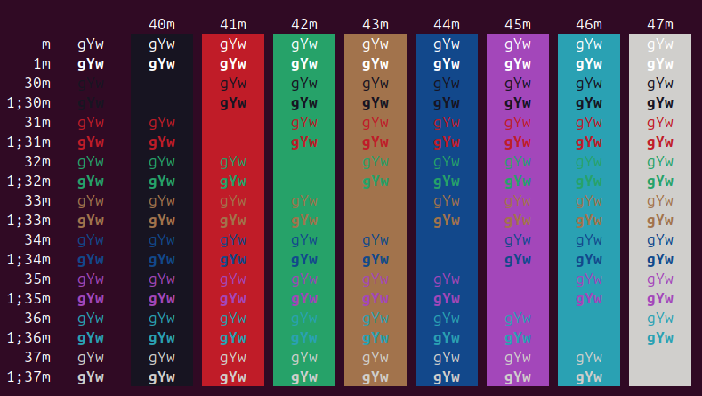

Even though I am not a system admin, I work frequently in remote or virtual computers other than my desktop, and Ubuntu default terminal requires me to have my username, hostname, and full directory path in my prompt … whiiich tends to be a bit lengthy!
Most of the time, I use zsh and oh-my-zsh. In 5 minutes, you can set up a nice config and call it a day (and I recommend doing that!).
For some obscure reason, I wanted to try doing some linux certifications and since most of them require you to be on bash I wanted to stick with it and have a minimal setup for my daily needs.
The prompt was one thing that really bothered me!
A prompt for my specific needs
Like I said, I am not a sys. admin who can constantly change their “user” and “host” and if I am doubting whoami or where I am (pwd) I can easily get those from the command line. Hence, just having the directory of the project I am in is enough for my needs. I should also say, in most terminal emulators you will already have a windows title with all of that info.
I switch git’s branches quite a lot, and having a prompt reminding me on which branch I am was something that I was missing.
After a quick search it appears that this HOWTO from Giles Orr was the perfect reading material.
Stuff outside of my needs but worth learning
I enjoyed playing with my prompts and testing all the examples that provided! It is totally worth reading and since your use of shell may differ from mine, you will probably pick out other interesting ideas.
I just want to highlight a few of them here.
A script to test colors on bash!
a very nice way of using local variables in function to make it more readable:
# [...] plenty of code above
local GRAY="\[\033[1;30m\]"
# [...] then using $GRAYExamples using PROMPT_COMMAND variables
Using functions to switch prompt styles (happy_day_prompt /sad_day_prompt, anyone?)
Displaying other system information like number of running jobs, last exit status returned and more!
Stuff that I learned and that I am going to use
In bash, .bashrc seems to be the place (I am deferring to Giles Orr here) to either source another script with your functions setting your prompt or to directly set your prompt.
In Ubuntu it seems my .bashrc already had some lines of codes to handle the prompt (depending if my terminal can handle color or not):
# color_prompt and debian_chroot are declare a bit above
if [ "$color_prompt" = yes ]; then
PS1='${debian_chroot:+($debian_chroot)}\[\033[01;32m\]\u@\h\[\033[00m\]:\[\033[01;34m\]\w\[\033[00m\]\$ '
else
PS1='${debian_chroot:+($debian_chroot)}\u@\h:\w\$ '
fiI think it is easier for a quick implementation to just modify those lines instead of sourcing a specific function.
You can also do echo $PS1to check what is yours. If you want to play with it first before updating the file you should follow the same pattern provided by Giles Orr:
SAVE=$PS1 # "save" it
PS1="\W$ " # test something
PS1=$SAVE # back to the originalIf, like me, you did not grow up with ASCII code and bash Prompt Escape Sequences this is the one you need to understand:
\033is an ASCII escape character (it could probably be replaced by\ein bash)01;32mare defining font then color (or background color). I do not know why they should be followed bym. If you do not want to keep the same font/color after your prompt, you need to reverse character to default (\033[00m).

See also this wikipedia article for more info: https://en.wikipedia.org/wiki/ANSI_escape_code#Colors
\[ \]is the beginning and end sequence to include non-printing characters, a backlash (\) needs to be used here because[and]are parts of reserved characters. Even if we do not see characters defining escape characters and colors they are still taking up space in the prompt (quite a lot!) and so we need a way to indicate that they should not be “displayed”.\uis for the user name (I do not want to keep it)\hfor the host name (I also do not want to keep it)\wis for the current working directory and\W(uppercase) just gives us the basename of the working directory (perfect for me)$needs also to be escaped (\$), notice also that a white space is included after\$ 'and should be kept.
As you see, an easy ways to change my prompt is to remove : the part before it up to the parts that are defined using chroot (on my setup this also could probably be removed, but I may log into places where chroot is specified and I am being restricted!) andchange` for its uppercase version.
For the git branch I wrote a quick function:
git_branch_show_current () {
git branch 2> /dev/null --show-current
return
}It displays the current branch and sends any error in a dark corner of /dev/null/.
Then I added some parenthesis to look a bit fancy, changed quotes and changed colors.
git_branch_show_current () {
git branch 2> /dev/null --show-current
return
}
if [ "$color_prompt" = yes ]; then
PS1="${debian_chroot:+($debian_chroot)}\[\033[31;35m\](\$(git_branch_show_current))\033[00m\]:\[\033[01;34m\]\W\[\033[00m\]\$ "
else
PS1='${debian_chroot:+($debian_chroot)}\u@\h:\w\$ '
fiI now have:
in purple, surrounded by parenthesis, the git branch branch I am in
:a separatorthe basename of the repository (still in blue)
$
Other potential improvements
Later, I may play around with using the exit value (is it 0 or not?) and maybe displaying the history number could be useful to easily rerun some commands previously used!